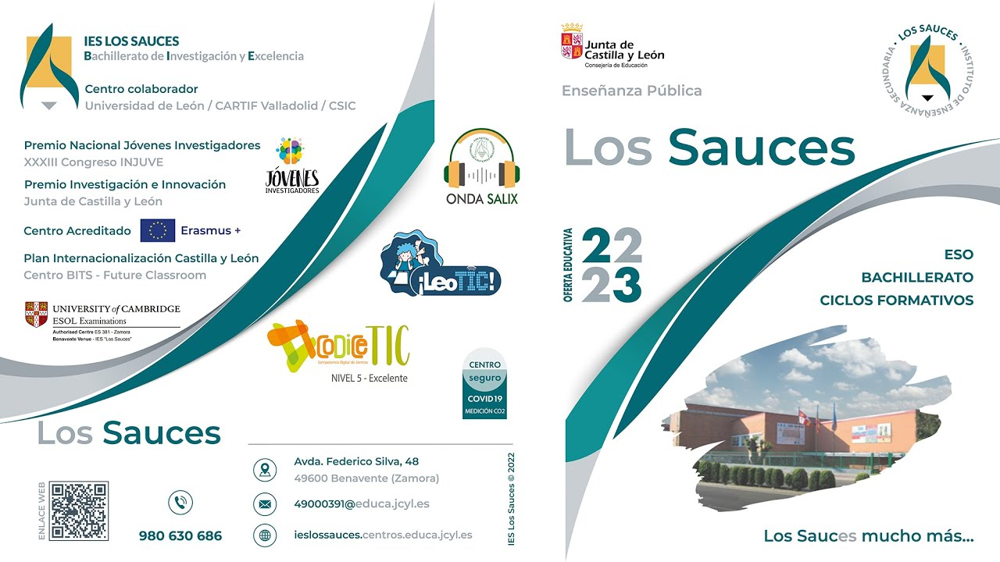
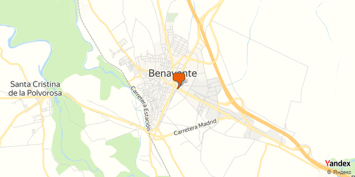
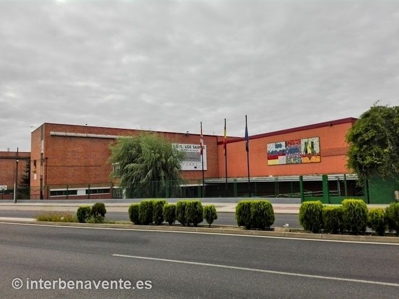

Video de puertas abiertas
Vídeo Presentación Oferta Educativa Jornada de Puertas Abiertas para Alumnos 6º Primaria
Audios
Audios sobre distintos temas del instituto
Imagenes
En estas imagenes se muestran el catalogo del instituto y la localizacion del mismo
  